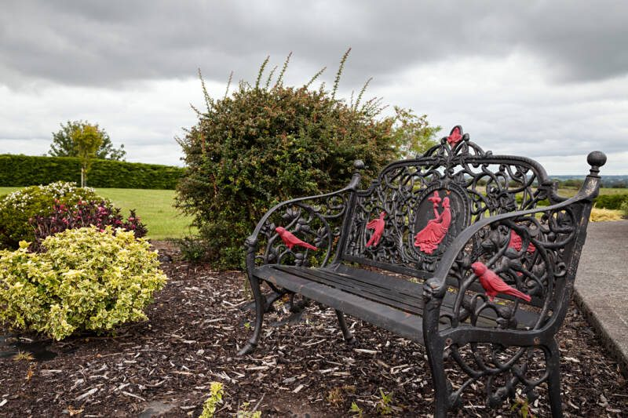

Home › The home
The home
A purpose-built, single-storey nursing home on Chapel Road, with gardens on two sides and the village a short walk away.

Rooms
Single and twin rooms, all with en-suite facilities.


- En-suite in every roomWith remote-control television, nurse call and a direct-dial telephone as standard
- Spacious and brightLooking out over the landscaped gardens and the surrounding countryside
- Your own thingsPhotographs, cushions and throws from home, so the room becomes yours
- All on one levelWide corridors for walking in bad weather
- Wheelchair accessibleIn every area of the building
- Assisted dining roomA quieter second dining room, where staff help at mealtimes at the pace of the person eating
- Also in the buildingIn-house chapel, hairdressing room, library and jacuzzi room, with a smoking area outdoors

The grounds
Carefully tended gardens and a walkway with resting points along the way, and a raised-bed enclosed garden to potter in with other residents and staff.
St Bernard's Church is beside us, and the village is a short walk. Galway city is 15 miles away.
Musicians, baking, bingo, and a garden to potter in.
Our Activities Coordinator plans the week, the chefs cook fresh each day, a chartered physiotherapist visits weekly, and Mass is celebrated in the house.

Security and safety
CCTV covers all entrance doors, internal corridors and communal rooms. The fire alarm is fully addressable, and fire safety training is a mandatory part of employment for every member of staff.
Nurse call points are fitted in every bedroom, en-suite, corridor, communal room and exit door, so a resident can call for help from anywhere and get a prompt response. Every nurse carries an internal cordless phone.
Visiting
Visitors are welcome at your own convenience, within reason and in consideration of other residents. For security, we ask everyone to sign the visitors register on the way in and out. Contact with family and friends matters, and we will help you keep it up.
Our team
An important asset in any nursing home is the quality of the staff and the coordination of the team. We are lucky to have an exceptional team, dedicated to personalised care, with a strong emphasis on ongoing training and staff development.
If you would like to work here, ring 093 431 30 or see careers.

Come and see the place for yourself.
The best way to judge a nursing home is to stand in it. Ring us and we will arrange a time that suits, and you can bring whoever you would bring.